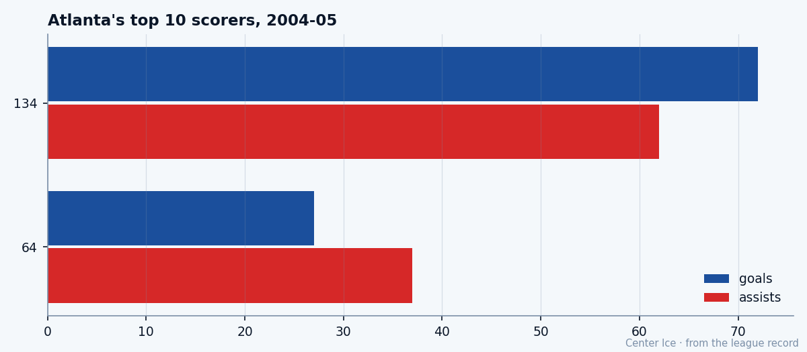

Ilya Kovalchuk, at 21: the brightest wing in the Book, on the last-place team in the East
92 in the Book, 64 points in 36 games, and a Thrashers room that has won 9. The gap between the man and the team is the whole of this Atlanta winter.
 Tomáš VránaProfile writer · The Sweater
Tomáš VránaProfile writer · The Sweater Ilya Kovalchuk86 is 21, wears 17 because Valeri Kharlamov wore it, and has 64 points in 36 games for a team that has won 9 of those 36 games. The Book grades him 92, five above his base, up five on the Development Index.
Ilya Kovalchuk86 is 21, wears 17 because Valeri Kharlamov wore it, and has 64 points in 36 games for a team that has won 9 of those 36 games. The Book grades him 92, five above his base, up five on the Development Index.  Atlanta Thrashers sits last in the Southeast with 28 points, and the goals-against column reads 157, or 4.36 a night. Nobody in the league does work this beautiful for a room this cold.
Atlanta Thrashers sits last in the Southeast with 28 points, and the goals-against column reads 157, or 4.36 a night. Nobody in the league does work this beautiful for a room this cold.
The question of the Atlanta winter is how he keeps the pace while the club bleeds it out the other end. The answer, so far, is that it does not touch him. The Index that has him climbing is the same edition that puts his team 22 points behind the division leader. He is the one exception on a page of bad news, and he seems to know it.
The boy from Tver
He came out of the Spartak Moscow system, out of Tver, and when the league called the top name at the 2001 draft the history came with it: the first Russian ever taken first overall. He had played two seasons in the Vysshaya Liga before that June. The number 17 was a tribute before it was a brand. Kharlamov wore it on the Soviet line of the 1970s, and the kid who chose it chose the game the same day. He was 14 when he crossed the ocean for the Quebec pee-wee tournament with Spartak's kids, and what the scouts who saw him kept saying was the same thing they say now: the shot was already an adult's.
The record since has run in a straight line. Twenty-nine goals and 51 points as a rookie, cut at 17 games by a shoulder. Thirty-eight goals the year after. Last season, the full winter: 72 goals and 134 points in 82 games, and the All-Star Game along the way.
The record is moving faster than last season
This year his pace is better than that. The numbers, side by side:
| season | gp | goals | assists | points | mpg |
|---|---|---|---|---|---|
| 2003-04 | 82 | 72 | 62 | 134 | 21.7 |
| 2004-05 | 36 | 27 | 37 | 64 | 20.2 |
64 points in 36 games is a 145.8-point pace, and the 27 goals project to 61.5. He is outrunning his own brilliant year in two fewer minutes a night, 20.2 against last season's 21.7, while the club around him is the worst in the East. The Book reads it exactly the way the numbers do: 92 today, ACCE 99, AGIL 99, SHPW 99, SPEE 99 on the top shelf of his page, DEKG 96 and HERO 96 just under it.

The current one is the brighter line, and he is doing it with less ice and fewer nights that mean anything by the third period.
The room
Beside him is  Dany Heatley84, 90 in the Book, 58 points in 33 games, the only other man on the roster who can carry a period. After them the drop is steep:
Dany Heatley84, 90 in the Book, 58 points in 33 games, the only other man on the roster who can carry a period. After them the drop is steep:  Patrik Stefan75 at 27 points, the next center on the depth chart at 27 himself, the wingers behind them scattered in the teens. The room understands what it has, and it has stopped being shy about it. A Thrasher would say it this way: you put him on the half-wall, the power play is his, and the whole building stands up, and he is 21, and you are the ones who should be watching him. They talk about him the way a smaller team talks about its one big man, with the faint surprise of men who are seeing it themselves.
Patrik Stefan75 at 27 points, the next center on the depth chart at 27 himself, the wingers behind them scattered in the teens. The room understands what it has, and it has stopped being shy about it. A Thrasher would say it this way: you put him on the half-wall, the power play is his, and the whole building stands up, and he is 21, and you are the ones who should be watching him. They talk about him the way a smaller team talks about its one big man, with the faint surprise of men who are seeing it themselves.

The part of the Book they do not put on the bench is his floor. The same page that prints the four 99s prints FIGH 50 and SPBI 51, and the faceoff grade sits at 56, and the injury column is a 53. He does not kill your penalty, he does not win the draw, and the body has cost him a season already, at 19. That is the argument about him, the one the scouts carry: the most gifted forward in the league, with a potential the Book caps at 86 because there is an end of the ice he will not play. It has not cost Atlanta a point, because Atlanta does not have points to protect.
His morale reads 92 anyway. The money is $1.10M on a contract with one year left, the cheapest marquee number in the league, and the Index has him climbing while his club falls. He is the rarest thing on a last-place team: the one man whose stock the bad season has only raised.
The one warmth
You go to Atlanta Thrashers now and you watch for the shift. He takes the puck from his own end at 20.2 minutes a night, cuts at the top of the circle, and the shot does the rest; on a team that gives back 4.36 goals a game, the only sure thing in the building is that one wrist. He is up five on the Index while Atlanta gives it away in fives. The only story here worth driving to Philips for.